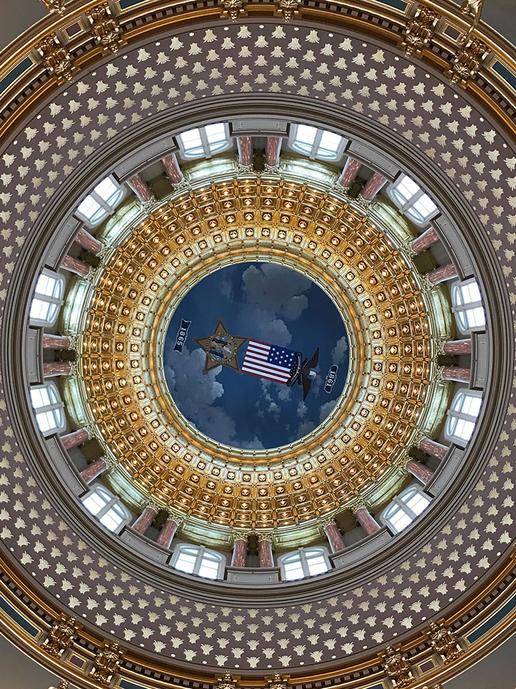
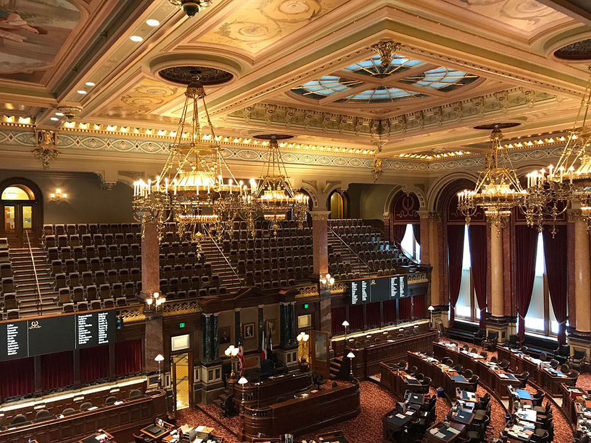
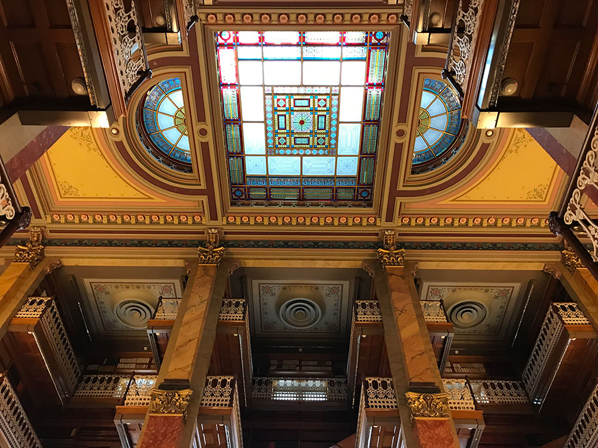
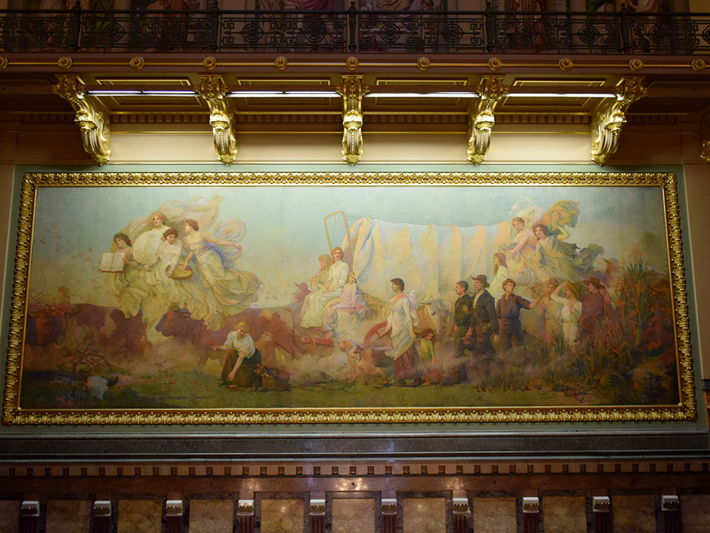
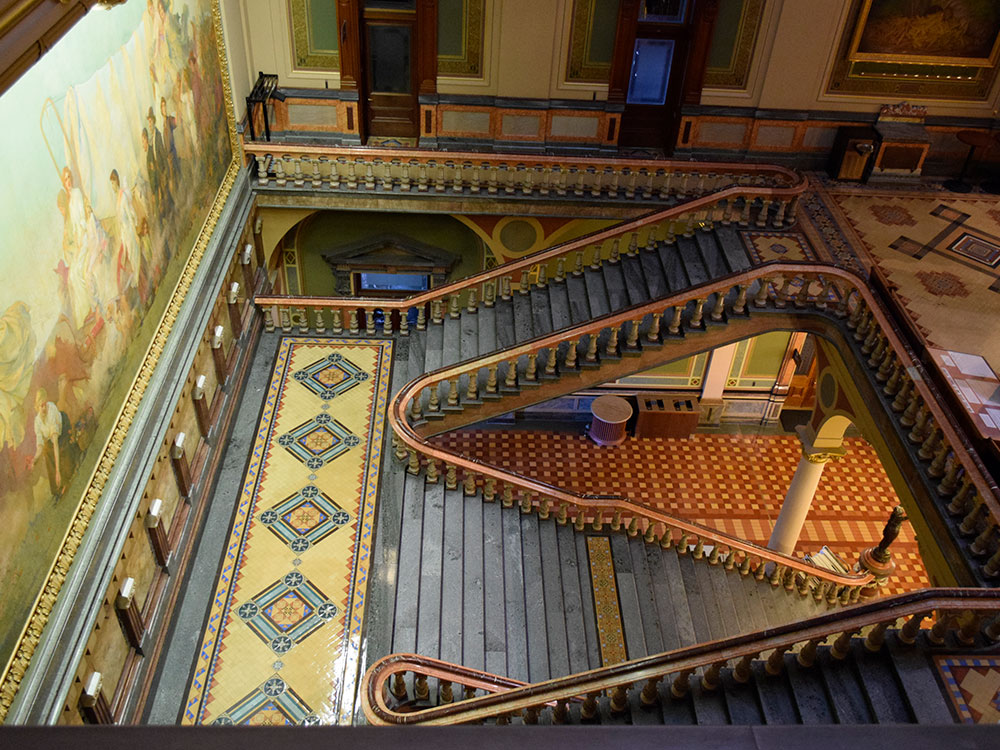
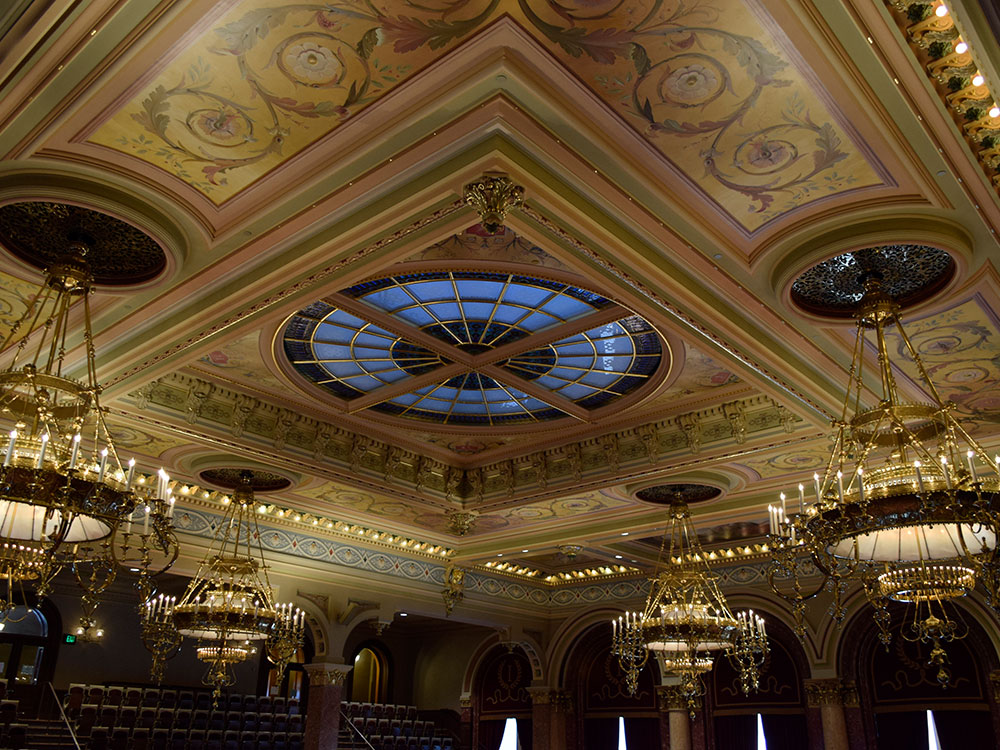
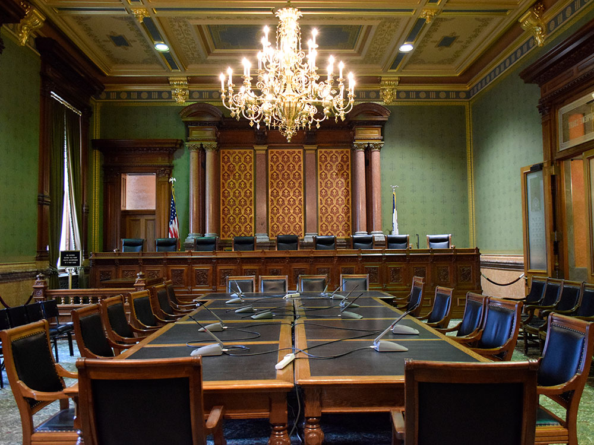

Seat of the Iowa General Assembly set atop a hill and offers a panoramic view of the city's downtown and the West Capitol Terrace
General Information
Saturday: 8am–4pm
Closed Sundays and state holidays
Free guided tours available Monday–Saturday; check legis.iowa.gov for tour schedule
How to Get There
From downtown Des Moines: Head east on Grand Ave; the Capitol dome is visible from downtown and serves as its own landmark. The building sits atop Capitol Hill at the east end of Grand Ave, approximately 1 mile east of the city center. Free parking is available in the Capitol Complex lots.
Overview
The Iowa State Capitol, commonly called the Iowa Statehouse, is in Iowa's capital city, Des Moines. As the seat of the Iowa General Assembly, the building houses the Iowa Senate, Iowa House of Representatives, the Office of the Governor, and the Offices of the Attorney General, Auditor, Treasurer, and Secretary of State. The building also includes a chamber for the Iowa Supreme Court, although court activities usually take place in the neighboring Iowa Supreme Court building. The building was constructed between 1871 and 1886, and is the only five-domed capitol in the country.
Located at East 9th Street and Grand Avenue, the Capitol is set atop a hill and offers a panoramic view of the city's downtown and the West Capitol Terrace. Various monuments and memorials are to its sides and front, including the Soldiers and Sailors' Monument and the Lincoln and Tad statue.
The architectural design of the Capitol, rectangular in form, with great windows and high ceilings, follows the traditional pattern of 19th-century planning for public buildings. A modified and refined Renaissance style gives the impression of strength and dignity combined with utility. The building measures 364 feet (111 m) from north to south and 247 feet (75 m) from east to west.
The exterior of the building is entirely of stone with elaborate columns and handsomely designed cornices and capitals. Iowa stone is the foundation for the many porticoes of the building. The building is brick with limestone from Iowa, Missouri, Minnesota, Ohio, and Illinois. The substructure is of dark Iowa stone topped by a heavy course of wari-colored granite cut from glacial boulders gathered from the Iowa prairie. The superstructure, or main part of the building, is of bluff colored sandstone from quarries along the Mississippi River in Missouri.
Both front and back porticoes have pediments supported by six Corinthian columns each. The pediment over the front entrance discloses a fine piece of allegorical sculpture.
The commanding feature is the central towering dome constructed of iron and brick and covered with tissue-paper thin sheets of pure 23-carat gold. There is a protective layer sealing the gold from the weather. The dome is surmounted by a lookout lantern that may be reached by long and winding stairs, and it terminates in a finial that is 275 feet (84 m) above the ground floor. From its opening during 1884 until 1924, it was the tallest building in Des Moines, and likely the entire state. The rotunda beneath the dome is 80 feet (24 m) in diameter. Four smaller domes of simple design rise from the four corners of the Capitol.
The beauty, dignity, and arrangement of the interior become apparent as a visitor stands under the dome of the first floor. Broad, lofty corridors extend west, north, and south. Walls are highly decorated and the rooms and chambers of the capitol have a wide variety of Iowa wood as well as imported marble. Twenty-nine types of imported and domestic marble were used in the interior; and the wood used—walnut, cherry, catalpa, butternut, and oak—was nearly all from Iowa forests.
The marble grand staircase between the second and third floors is to the east and is the focal point of the building. Suites opening from the south corridor are those of the Governor, Auditor of State, and Treasurer of State. The historical Supreme Court Chamber is to the north; the Secretary of State's suite is to the west. The grand staircase ascends to a landing and divides north and south to bring visitors to the floor above, where the House of Representatives is on the north, the Senate is on the south side, and the Law Library on the west. The Victorian-styled Law Library features four stories of balcony shelves surrounding a central atrium and is open to the public on weekdays.
The ground floor houses a cafeteria and administrative offices.
Around the rotunda on the frieze above the columns is the famous quotation from Abraham Lincoln's Gettysburg Address: "This nation under God shall have a new birth of freedom that government of the people, by the people, for the people, shall not perish from the earth."
Extending the full width of the east wall over the staircase is the mural painting Westward, an idealized representation of the coming of the people who made Iowa. The painting was completed shortly after the start of the 20th century.
In the central rotunda, suspended beneath the ceiling on wires is a very large banner of the insignia of the Grand Army of the Republic, which between 1894 and 1953 had a room in the state capitol dedicated for their use. They are the only non-state agency to have ever occupied space in the capitol.
The battle flags carried by the Iowa regiments in various wars are preserved in niches on the main floor: Civil War, 1; Spanish-American War, 13; World War I, 26. In the west hall is a plaque done by Nellie V. Walker in commemoration of the work of Iowa women in the fight for political equality and a memorial to those Iowans killed in Operation Iraqi Freedom and Operation Enduring Freedom.
Also in the west hall is a model of the battleship USS Iowa on loan from the U.S. Department of the Navy. The model is 18 feet 7 inches long and weighs about 1,350 pounds. It is a perfect scale model, 1/4 inch equaling 1 foot. The Iowa was the lead ship of her class of battleship and the fourth in the United States Navy to be named in honor of the 29th state. It is also the last lead ship of any class of United States battleships, and was the only ship of her class to have served in the Atlantic Ocean during World War II. On July 7, 2012, the retired Iowa opened to the public as a floating educational and naval museum at the Port of Los Angeles in San Pedro, California.
In the south hall across from the Governor's office is a collection of porcelain dolls representing the 41 Iowa First Ladies in miniature replicas of their inaugural gowns. Where actual descriptions of the gowns could not be found, they are typical of the period.
This article uses material from the Wikipedia article "Iowa State Capitol", which is released under the Creative Commons Attribution-Share-Alike License 3.0












